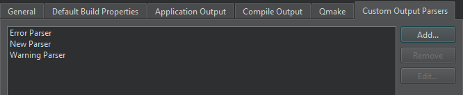
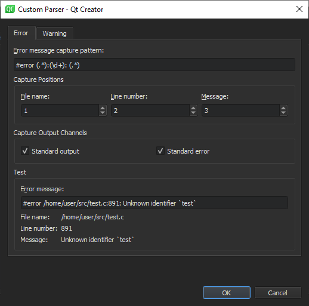

Add custom output parsers
Custom output parsers scan command-line output for error and warning patterns that you specify and create entries for found patterns in Issues.
To add or change custom output parsers, select Preferences > Build & Run > Custom Output Parsers.

To edit the settings of a custom output parser, select it in the list, and then select Edit.
To remove the selected parser, select Remove.
Set custom parser preferences
You can capture errors and warnings separately, according to the settings you specify in the Error and Warning tab.
To create a custom output parser:
- Select Preferences > Build & Run > Custom Output Parsers > Add.

- In the Error message capture pattern field, specify a regular expression to define what is an error. The custom parser matches the compile output line by line against the regular expression and displays errors in Issues. Create regular expression groups that contain the file name, line number and error message.
- In the Capture Positions field, map the regular expression groups to File name, Line number, and Message.
- In the Capture Output Channels field, specify whether messages from standard output, standard error, or both channels should be captured.
- In the Test group, you can test how the message that you enter in the Error message field is matched when using the current settings.
- Select OK to add the parser to the list of parsers and return to the Custom Output Parsers tab.
- Double-click the parser name to change it to something more descriptive than the default value.
See also Activate custom output parsers.